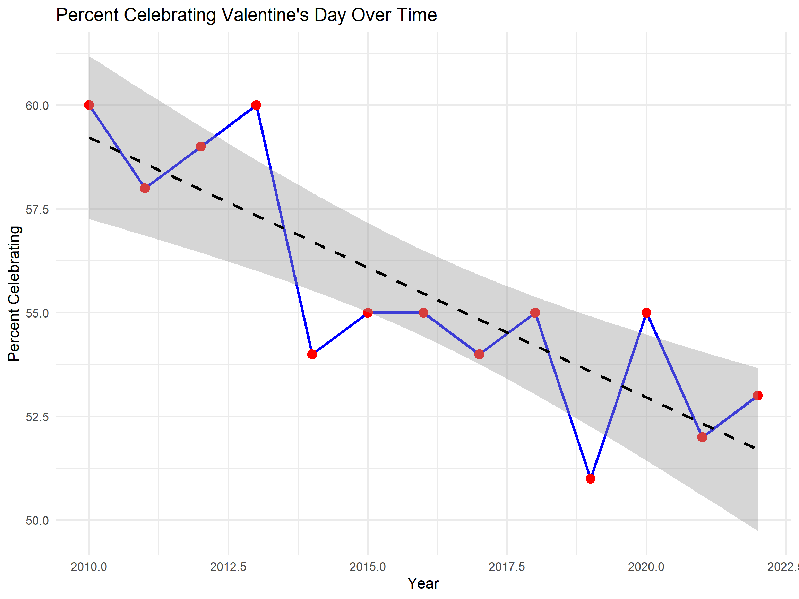

tuesdata <- tidytuesdayR::tt_load(2024, week = 7)
historical_spending <- tuesdata$historical_spending
gifts_age <- tuesdata$gifts_ageValentine’s Day has long been one of the biggest consumer-driven holidays, with billions spent each year on gifts and celebrations (National Retail Federation, n.d.). But as shopping habits and social values shift, so do people’s preferences when it comes to Valentine’s Day gifting… Let’s explore how consumer spending trends have changed based on spending trends, preference shifts and age group differences.
What data will be applied:
The data has been downloaded from the github project called “tidytuesday” and original data is from National Retail Federation (n.d.).
In this case historical_spending.csv and gifts_age.csv are used for the analysis, provide insights into Valentine’s Day spending habits over time and across different age groups.
historical_spending.csv: This dataset captures the trends in Valentine’s Day spending from a historical perspective. Key variables include:
- Year: The year in which spending data was recorded.
- PercentCelebrating: The percentage of people celebrating Valentine’s Day that year.
- PerPerson: The average amount spent per person celebrating the holiday.
- Candy, Flowers, Jewelry, GreetingCards, EveningOut, Clothing, GiftCards: These variables represent the average spending on specific categories, giving insight into how people allocate their budgets across different types of gifts.
gifts_age.csv: This dataset focuses on spending patterns based on age groups. Key variables include:
- Age: The age group of individuals.
- SpendingCelebrating: The percentage of people within each age group who spend money on or celebrate Valentine’s Day.
- Candy, Flowers, Jewelry, GreetingCards, EveningOut, Clothing, GiftCards: These variables represent the average percentage of spending on each type of gift within the given age group, shedding light on how spending preferences change with age.
Together, these datasets provide a comprehensive look at how spending on Valentine’s Day has evolved over time and varies across different age demographics.
Steps to get tidy data:
Download the data by using the code below in R studio:
These datasets are well-prepared and ready to use, thus no data manipulation are needed.
Some analysis…
- Creating a line plot Figure 1 using ggplot2 in R to visualize the trend in the percentage of people celebrating Valentine’s Day over the years 2010 to 2022. Each red point in the graph represents one year. To highlight the overall trend, a regression line was added. Over the period, the percentage of people celebrating Valentine’s Day has generally declined. Although there are fluctuations, the regression line confirms a downward trend, suggesting a decreasing interest in the holiday.

- As table Table 1 shows, 23.76 was the highest proportion spent on EveningOut in 2010. In 2022, jewelry became the largest spending proportion at 45.75. EveningOut and other options still saw a considerable growth but not as high as in jewelry.
| Year | PercentCelebrating | PerPerson | Candy | Flowers | Jewelry | GreetingCards | EveningOut | Clothing | GiftCards |
|---|---|---|---|---|---|---|---|---|---|
| 2010 | 60 | 103.00 | 8.60 | 12.33 | 21.52 | 5.91 | 23.76 | 10.93 | 8.42 |
| 2011 | 58 | 116.21 | 10.75 | 12.62 | 26.18 | 8.09 | 24.86 | 12.00 | 11.21 |
| 2012 | 59 | 126.03 | 10.85 | 13.49 | 29.60 | 6.93 | 25.66 | 10.42 | 8.43 |
| 2013 | 60 | 130.97 | 11.64 | 13.48 | 30.94 | 8.32 | 27.93 | 11.46 | 10.23 |
| 2014 | 54 | 133.91 | 10.80 | 15.00 | 30.58 | 7.97 | 27.48 | 13.37 | 9.00 |
| 2015 | 55 | 142.31 | 12.70 | 15.72 | 36.30 | 7.87 | 27.27 | 14.72 | 11.05 |
| 2016 | 55 | 146.84 | 13.11 | 14.78 | 33.11 | 8.52 | 33.46 | 15.05 | 12.52 |
| 2017 | 54 | 136.57 | 12.68 | 14.63 | 32.32 | 7.36 | 28.46 | 13.91 | 10.23 |
| 2018 | 55 | 143.56 | 13.12 | 14.75 | 34.10 | 6.55 | 26.96 | 14.04 | 11.04 |
| 2019 | 51 | 161.96 | 14.12 | 15.07 | 30.34 | 7.31 | 27.72 | 16.08 | 10.31 |
| 2020 | 55 | 196.31 | 17.30 | 16.49 | 41.65 | 9.01 | 30.78 | 20.67 | 14.21 |
| 2021 | 52 | 164.76 | 15.32 | 15.42 | 30.71 | 8.48 | 21.39 | 20.05 | 15.67 |
| 2022 | 53 | 175.41 | 15.90 | 16.71 | 45.75 | 7.47 | 31.35 | 21.46 | 17.22 |
- Based on table Table 2, older age groups tend to have less intention to celebrate Valentine’s Day. Candy and flowers remain popular across the board, but tend to be more popular among the youngest of participants. For experiential spending, evening outings become more prominent in younger age groups, particularly the 18-24 group. Jewelry spending also tends to go down with age, as the 18-24 group spends quite a bit more on that category compared to the older groups. Starting at 55 plus, the tendency for spending on categories such as jewelry and clothes shows a very clear downward trend.
| Age | SpendingCelebrating | Candy | Flowers | Jewelry | GreetingCards | EveningOut | Clothing | GiftCards |
|---|---|---|---|---|---|---|---|---|
| 18-24 | 51 | 70 | 50 | 33 | 33 | 41 | 33 | 23 |
| 25-34 | 40 | 62 | 44 | 34 | 33 | 37 | 27 | 19 |
| 35-44 | 31 | 58 | 41 | 29 | 42 | 30 | 26 | 22 |
| 45-54 | 19 | 60 | 37 | 20 | 42 | 31 | 20 | 23 |
| 55-64 | 18 | 50 | 32 | 13 | 43 | 29 | 19 | 20 |
| 65+ | 13 | 42 | 25 | 8 | 44 | 24 | 12 | 20 |
Some advice for the market…
the analysis emphasize that, for Valentine’s Day marketing planning, companies need to adapt to the new tastes and desires of different age groups. Overall, the decline in the percentage celebrating Valentine’s Day would indicate a shift in values or priorities for society. However, in the product categories, such as jewellery, a true rise has taken place, which was most pronounced in the younger consuming population. With these insights, businesses can provide better personalization of their offering to appeal to some consumer groups, hence driving those activity groups toward more revenue in Valentine’s Day. Knowing such trends at the forefront will enable businesses to be head of the pattern shift and make wiser decisions toward emerging consumer behaviours.
Reference
National Retail Federation. (n.d.). Valentine’s Day data center. https://nrf.com/research-insights/holiday-data-and-trends/valentines-day/valentines-day-data-center